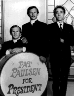
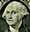

As any of the 190 or so presidential candidates who have filed with the FEC will tell you, actually mounting a campaign takes a lot of effort. You have to convince state officials to put you on the ballot for primaries, raise campaign funds, form election committees and most importantly generate publicity.
In the prehistoric age, promotion meant printing posters, passing out buttons, kissing babies and pestering the media with press releases, but to quote Bob Dylan, "the times they are a-changin'." Just as anyone else with a message or a product to sell has discovered, the Web is a simple, relatively cheap and surprisingly effective tool for generating a buzz.
For mainstream candidates like Bill Clinton and Bob Dole, who have the national media following them around reporting on what they ate for breakfast, the effects of a Web page may be minimal, but for the Bruce Daniels, Tom Shellenberg, Dr. John Hagelin and other "fringe" candidates of the world, a Web page can be a godsend. For Daniels specifically, a liberal candidate running as a Democrat and a professor at the University of Winnipeg (he holds a dual citizenship), having a Web page means that despite a severely underfunded travel budget, he can reach a national audience. "Rather than having to publicize the campaign, we put up a Web page for a couple hundred dollars," says Mark Baldwin, Daniels' press secretary and Internet correspondent.
Baldwin says he had to persuade Daniels to use the Web as a campaign tool. "I had to convince him that with thousands of potential visitors, the instant exposure would mean way more impact than any other use of $300." Baldwin says that hits at the site have grown exponentially, growing to 40 or 50 a day in December. He's hoping the primary season will mean that number will continue to grow.
Beyond publicity, the Web can work to educate voters on a level that traditional media cannot. "The Web makes politics more intelligent, rather than just sound bites and pictures on the nightly news, voters can take the time to read the positions of all the candidates," Baldwin says.
Rafael David, director of Information Technology for the Natural Law Party, echoes Baldwin's comments that the 'net will result in a more informed electorate: "The Web provides a forum for people who are seriously interested in the issues and the solutions." So far, David says, the main benefit of having a Web presence for his party has been the increased interest of people, especially college students, who want to volunteer. David says hits are totaling 2,000 to 4,000 a day between the party's site and a separate site for their presidential candidate Hagelin. In anticipation of increased interest during the primaries when the party will start airing a 30-minute infomercial, the site recently made the switch to a private server with the capabilities to handle up to 100,000 hits.
Web pages aren't just the tools of a new class of tech-savvy, political neophytes. Even veteran perennial fringe candidates such as comedian Pat Paulsen and unintentional comedian Lyndon Larouche have set up shop on the Web.
 For Paulsen, now in the throes of his fourth campaign for the nation's highest office, the Web has been a blessing. The comedian, who rose to prominence doing editorials on The Smothers Brothers Comedy Hour in the late '60s, says his biggest claim to political fame is that he got between 100,000 and 200,000 votes in the 1968 election, effectively putting Nixon in the White House by taking votes away from Hubert Humphrey. With the main source of revenue for his campaign being frozen TV dinner fund raisers, Paulsen says the 'net is extremely useful for attracting volunteers he otherwise would never be able to lure with his limited campaign staff of himself, his wife Noma and his daughter.
The idea for Paulsen to do a site came last winter from a friend who ran a server in Arizona. Unwittingly, and despite the claims of Lamar Alexander, Paulsen was the first candidate to have a Web site, and of those candidates that have followed his lead, Paulsen says "most of their sites are pretty dull." One notable hit to Paulsen's site was a 45-minute visit from someone at www.whitehouse.gov, and although Paulsen says there is no way to know who in particular was doing the visiting, a couple of weeks later some changes were made to Al Gore's site that mimicked the content at Paulsen's. Noma Paulsen says she has been hard at work getting people to link their sites to her husband's. Her toils have translated to an ever-growing number of visitors. When their site was named Cool Site of the Day, they received over 7,500 hits, and the number would have been much larger except that the server couldn't handle the load.
Paulsen says he hopes that the secretaries of state, who effectively control who and who doesn't get put on the ballot for the primaries, take notice of the revolution happening on the 'net. Often, officials judge candidates by the amount of mainstream attention they are attracting and Paulsen says hits to a Web site should not be ignored. But he concedes acerbically "people at the secretary of state probably don't even understand what the Internet is."
Perhaps the most unique of the fringe candidates with a Web presence is Russell Hirshon, who though only 34, will be 35 years old by the time the election comes around, old enough to serve in the remote chance he wins. A Web site developer by day and bartender by night in Washington, D.C., Hirshon actually ran for president in '92, utilizing e-mail to get his message out.
 Hirshon has no grand illusions of winning; rather, his quest is part performance art, part voter-awareness
crusade. "I want to spark the interest of young people," says Hirschorn whose political career actually reaches
back to a mayoral bid against Marion Barry in '89.
Hirshon has no grand illusions of winning; rather, his quest is part performance art, part voter-awareness
crusade. "I want to spark the interest of young people," says Hirschorn whose political career actually reaches
back to a mayoral bid against Marion Barry in '89.
While in '92 Hirschorn did most of his campaigning in person -- going so far as to travel to Houston for the GOP convention so he could deliver a speech with his pants down around his ankles while sitting on a toilet outside the Astrodome -- in '96 he says the main thrust of his campaign will be over the Internet. He says he's doing it this way to study the difference between the two approaches and also so that he can hold on to some of his bartending wages. So far Hirshon says the Internet has allowed him to have "a much broader reach at an enormous cost savings."
Besides having a funny site, a trait he shares intentionally with Paulsen and unintentionally with several other candidates, Hirshon is the only candidate who is running a contest from his site. By writing a brief essay you can compete for the chance to be Hirshon's vice president. Of course, that and a nickel will buy you a piece of Bazooka, but as Hirshon says, "You have to have a sense of humor about it all. My goal is to motivate young people to get more politically involved."
Despite the guarded optimism of the fringe presidential candidates on the Web, most political consultants and analysts seem to think the Internet will hardly be the great equalizer between Bill Clinton and Bill Hartwell.
"It's definitely a coming trend and a useful way to reach people who are active on the 'net, but not a high enough percentage of people are using the 'net yet for it to be that effective," observes ary Nordlinger, a Democratic media consultant based in Washington, D.C.
Speaking strictly in terms of the fringe presidential candidates, Nordlinger believes having a Web page won't make any difference in their overall chances. "A fringe candidate is a fringe candidate is a fringe candidate," he says. "When you have incumbent U.S. senators not making a dent, what chance do one of these guys have? I mean, Richard Lugar isn't exactly taking off like the space shuttle."
Ron Faucheux, the editor and publisher of Campaign and Elections, says candidates are clamoring for a Web presence for three reasons: to experiment, to appear high tech and cutting edge, and to create on a national level a tool to communicate with interested parties.
Faucheux agrees that the numbers just aren't there yet for the Internet to have a significant impact: "At this point it's just one more element in the media mix.
"The Internet gives (the candidates) an opportunity to reach people, but exposure and an active audience are two different things," he says, "It takes more than a Web page to reach people. If they're not interested, it doesn't do much good."
Faucheux would, however, recommend that candidates establish a Web presence. "It's easy and inexpensive to do it. You can reach people who are into it." But on the other hand, Faucheux cautions those who think the Internet is a panacea for their campaigns woes. "With the Internet you have to remember it's an elite communications tool -- the users are usually people with a high level of education, and you can't forget that that is just scratching the surface of the electorate. The goal is to reach everybody."
So while it looks like the 'net's influence in the presidential political arena is still in its infancy, one political analyst, Jim Pinkerton, a White House aide to Reagan and Bush who now teaches at George Washington University, predicts on some level this year somebody will win a race because they used the 'net more effectively than their opponent. After that, Pinkerton says, candidates on all levels will have to consider seriously the capabilities of the 'net when mapping their campaign strategies.
